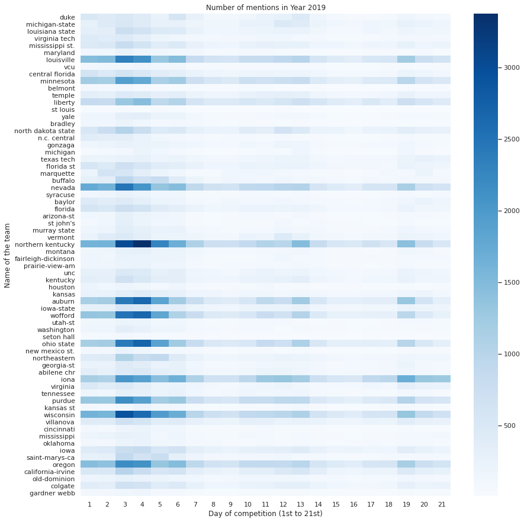

Google Cloud & NCAA® March Madness Analytics Kaggle Competition Winner

"Wow, we won a Kaggle competition!" That's pretty much the reaction Emilien Etchevers, Kieran Janin, Remi Le Thai, Haley Wohlever and I got when the results of the Google Cloud & NCAA March Madness Analytics competition were announced.
In this Kaggle competition, we aimed to understand the factors contributing to the entertainment, or madness, of a college basketball match using two sources: objective data on NCAA teams' previous performances, and subjective data on fans' reactions to games. For the purposes of this project, two dependent variables related to the madness were explored: predictability in March Madness matches, and the corresponding distribution of viewers' sentiment.
Click on the "Code" button on top of this webpage to discover our analysis!